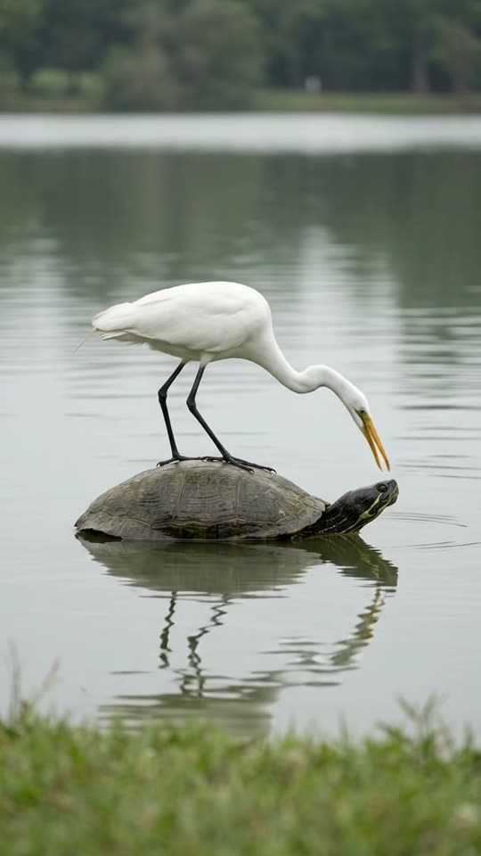
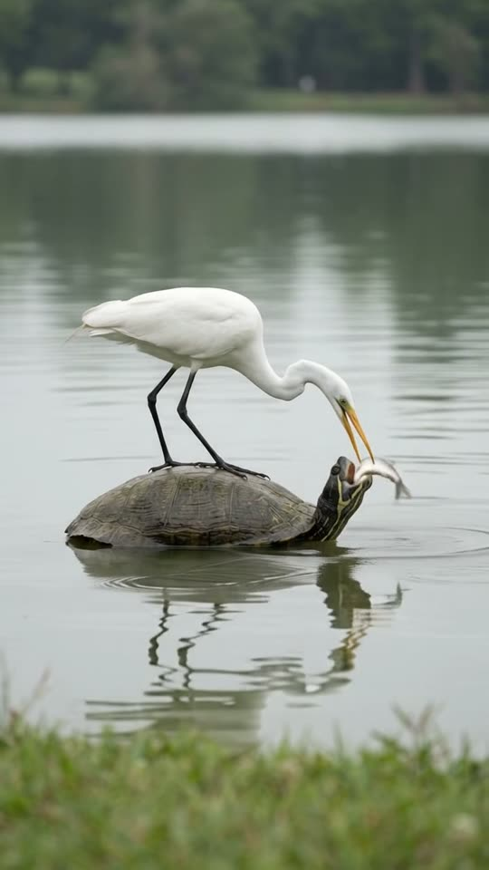
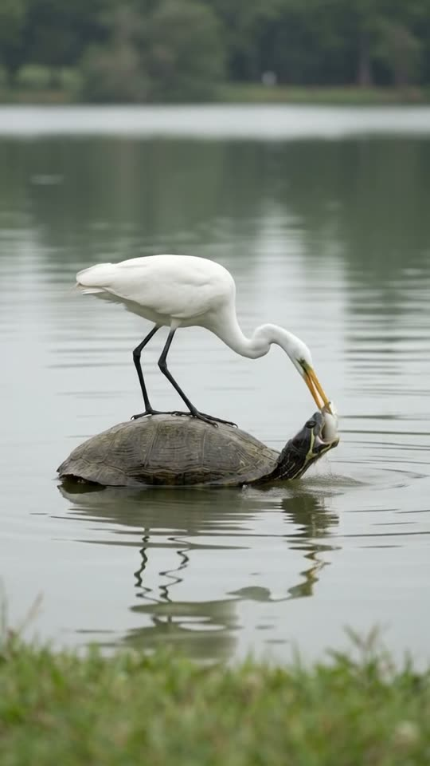
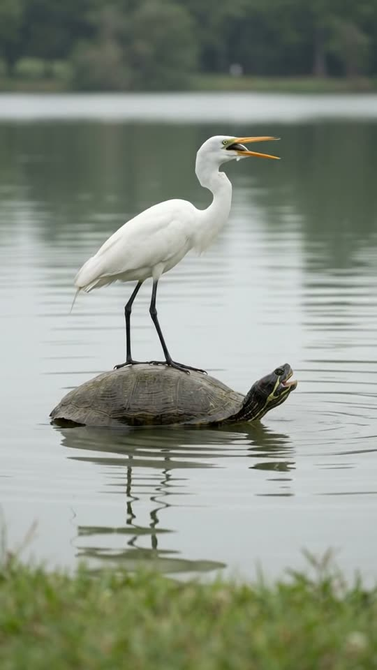

Free prompt pack
One shell.Two fish.
A white egret stands on a floating turtle. It catches a fish right in front of the turtle's face and puts it in its mouth. The turtle asks for another. The egret catches it and swallows it itself. One still image and one prompt, in one take.
Both prompts, in the order I ran them. Drag two fish into the turtle's mouth to reveal each one. Tap the lake for a jumping fish.
The first frame
Both facing right, bill over the turtle. This image is frame one: a long-lens view of a great egret standing on a floating turtle, both facing right, the egret's bill a hand's width in front of the turtle's face.
Watch out
Say which way each animal faces and put the bill where the action happens. The image wins over the text: an egret facing the wrong way fishes behind the turtle and drops the fish in the lake.

The prompt 140 words
Real wildlife photo taken with a long lens from the shore of a calm lake, soft overcast daylight, both animals seen from the side and facing right. A large freshwater turtle floats in the middle of the picture, its dark olive-brown domed shell just above the water, its head stretched out on the right, olive skin with thin yellow stripes. A great egret stands on the back of the shell facing right, the same way as the turtle: all white, long black legs, its long neck curved forward and down past the turtle's head, the tip of its long yellow-orange bill just above the water a hand's width in front of the turtle's face. Calm grey-green water with gentle ripples, their reflections below, the far shore a soft blur at the top. Shallow depth of field, natural colour, sharp detail.
One for you, one for me
Ten seconds, locked off from the shore. Add the image as the reference, set 10 s, 9:16, 720p and audio on, and paste the prompt whole.
- 0–1.2 sfirst strike
- 1.2–3.0 sinto the turtle's mouth
- 3.0–5.5 smore please, second strike
- 5.5–10 sthe egret keeps it
Watch out
Write the handoff step by step: down to the turtle's face, mouth open, fish between the jaws, let go. One line saying it feeds the turtle and the fish ends up in the water.
Fragments



The prompt 1049 words
FORMAT Real wildlife video filmed with a long lens from the shore, seen as the finished exported video file: the full picture edge to edge, nothing on top of it. Whatever records the picture is never in frame. One continuous take in real time, no cuts. Vertical frame. The video runs at 24 fps. No frame is repeated. Real time, 1x speed, never slow motion. SCENE On a calm lake, a great egret stands on the shell of a floating turtle, both facing the same way. The egret catches a small fish right in front of the turtle's face and puts it into the turtle's open mouth: the turtle takes it and swallows it. The turtle opens its mouth again for more; the egret catches a second fish, and as the turtle reaches for it, the egret lifts it away, tips its head back and swallows it itself. The egret is already leaning over the turtle's head in the first frame. The take ends with the egret standing tall and the turtle slowly closing its mouth. REFERENCE IMAGE Use it for the egret, the turtle, which way they face, the water, the reflections, the far shore and the light. Everything matches it exactly, zero drift, no smoothing. The movement is described below. THE EGRET One real great egret: all-white feathers, a long S-shaped neck, a long yellow-orange bill with a dark tip, long black legs, its feet gripping the back of the turtle's shell the whole time. It faces right, the same way as the turtle, from the first frame to the last; it never turns around on the shell. It moves like a real heron: stillness, then fast precise strikes of the neck. THE TURTLE One real freshwater turtle floating low in the water, facing right: a dark olive-brown domed shell, olive skin with thin yellow stripes on the head and neck. It stays where it is; only its head and neck move, and the shell rocks slightly when the egret strikes. THE FISH Two small silver fish, each about the length of the egret's bill, wet and wriggling. Each one is under the water until the bill comes up with it, right in front of the turtle's face. LOCATION MAP We are on the shore 15 m away, at water level, looking at them from the side. The turtle floats in the middle of the frame with its head on the right; the egret stands on the back half of the shell and its neck reaches forward over the turtle's head. The spot where both fish are caught is the water a hand's width in front of the turtle's face. The far shore is a soft blur at the top. FIRST FRAME The egret at x 20-60%, y 15-58%, facing right, its neck curved forward and down past the turtle's head, the tip of its bill just above the water at x 66%, y 60%; the turtle's shell at x 20-58%, y 56-68%, its head out of the water at x 58-68%, y 56-62%, facing right; their reflections below at y 68-90%; the blurred shore across the top. Instant read: a white bird on a turtle's back, about to fish in front of the turtle's face. No delayed reveal. CAMERA Locked off on the shore: a still frame with only the faintest natural movement of a long lens. It never pans, never zooms, never cuts, never moves closer, never goes underwater. ACTION TIMING 0–1.2 s — The bill dips into the water right in front of the turtle's face with a small splash and comes up with a small silver fish held crosswise, wriggling. 1.2–3.0 s — The handoff: the egret lowers the fish to the turtle's face; the turtle lifts its head and opens its mouth; the egret puts the fish between the turtle's jaws and lets go; the turtle bites down, the fish's tail flicking out of its mouth, and gulps it down. 3.0–4.5 s — The turtle opens its mouth again and stretches its neck up toward the egret's bill, asking for more; the egret straightens its neck. 4.5–5.5 s — The egret leans forward again and strikes the water in front of the turtle's face; it comes up with a second fish. 5.5–7.5 s — The turtle stretches up with its mouth wide open toward the fish, but the egret lifts its head away from it, tips the fish into its own throat and swallows it whole; a small bulge slides down its neck. 7.5–10 s — The egret stands tall on the shell, still facing right, and shakes a drop off its bill; the turtle slowly closes its mouth and lowers its head. Hold to the last frame. PHYSICS AND SCALE Real size: the egret is about 90 cm tall, the turtle's shell about 40 cm long. Each strike sends a small splash and rings of ripples; the shell rocks slightly under the egret's feet and settles. Fish wriggle and drip. The first fish ends inside the turtle's mouth, never in the water; the second ends inside the egret. One egret, one turtle, two fish. Nothing morphs. NO FULL-FRAME EVENTS Nothing fills the frame: the egret, the turtle and the water stay in view in every frame. LIGHTING Soft overcast daylight, even and gentle; white feathers bright but with detail; soft reflections on the water. AUDIO No music, no score, no narration, no subtitles. Quiet lake sounds: soft lapping water, a sharp splash at each strike, the wet slap of the fish, a soft gulp from the turtle, distant birds. No words. LOOK Real wildlife footage shot on a long lens, seen as the finished exported file: shallow depth of field, natural colour, crisp feather and shell detail, no film grain, no lens flare, no slow motion, never CGI, never a cartoon. No camera app interface: no shutter button, no gallery thumbnail, no record button, no icons, no timer, no recording dot, no frame lines. POSITIVE LOCKS One egret and one turtle, both facing right. Two small fish: the first into the turtle, the second into the egret. No people, no boats. No captions, no subtitles, no on-screen text, no watermark, no logos, nothing on top of the picture. ONE EGRET. ONE TURTLE. NO CUTS. NO ZOOM. NO SLOW MOTION. NO MUSIC.
Rule 01
The image picks the direction
Which way an animal faces is decided by the first frame, not the prompt. Write it into the image prompt or fight it all take long.
Rule 02
Pose the action
Start with the bill already over the spot where the fish comes out. The less distance to the action, the less the model improvises.
Rule 03
Say where things end
First fish inside the turtle, never in the water. Second inside the egret. Endings are where the model cheats.
That's the whole build
Now go findyour own odd couple.
If yours works, send it over. I read every DM and the good ones end up on the account.
@martiiifons